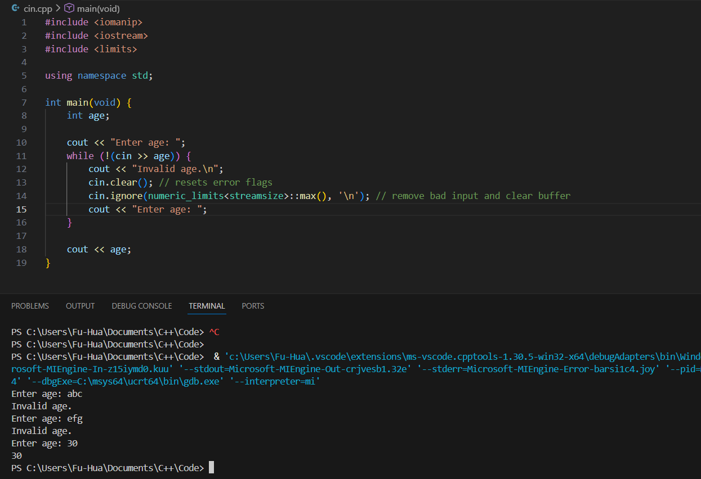
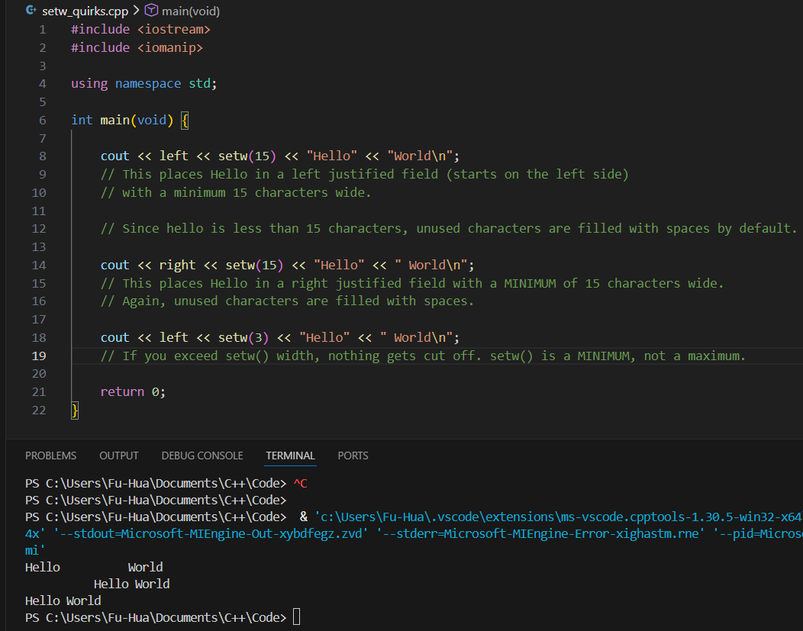

Example:
- If invalid input is entered...
- cin enters a fail state
- further operations stop working
- cin.clear() does NOT remove bad input from the buffer. It only resets the stream state.
int x;
cin >> x;
It clears the error state flags of cin.

cout << "hello" << endl;
| Specifier | Type | Example Format | Example Output (value = 12.3456 or 42) | Description |
|---|---|---|---|---|
| %d | Integer (int) | printf("%d", 42); | 42 | Prints a signed decimal integer |
| %f | Floating point (double/float) | printf("%f", 12.3456); | 12.345600 | Default: 6 decimal places |
| %.2f | Floating point | printf("%.2f", 12.3456); | 12.35 | Sets precision to 2 decimal places |
| %10d | Integer | printf("%10d", 42); | ________42 | Field width of 10 (right-justified by default) |
| %-10d | Integer | printf("%-10d", 42); | 42________ | Left-justified in field width of 10 |
| %10.2f | Floating point | printf("%10.2f", 12.3456); | _____12.35 | Field width 10, precision 2, right-justified |
| %s | String | printf("%s", "Hello"); | Hello | Prints a string |
| %c | Character | printf("%c", 'A'); | A | Prints a single character |
#include
#include
using namespace std;
double pi = 3.14159;
cout << fixed << setprecision(2) << pi << endl; // output: 3.14
| Manipulator | Header / Source | Example Code | Persistence | Description / Notes |
|---|---|---|---|---|
| endl | <iostream> | cout << "Hello" << endl; |
N/A | Terminates the output line (like "\n") and flushes the output buffer. |
| fixed | <iomanip> | cout << fixed << 3.14159; |
Persistent | Displays floating-point numbers in decimal format; works with setprecision() to control decimals. |
| showpoint | <iomanip> | cout << showpoint << 3; |
Persistent | Always shows the decimal point for floating-point numbers, even whole numbers (e.g., 3 → 3.000000). |
| setw(n) | <iomanip> | cout << setw(10) << 42; |
Temporary (next output only) | Sets the width of the next output to 'n' characters; right-justified by default. Useful for aligning columns. |
| setprecision(n) | <iomanip> | cout << fixed << setprecision(2) << 3.14159; |
Persistent | Controls decimal places if fixed/scientific, or significant digits otherwise. Default is 6. |
| scientific | <iomanip> | cout << scientific << 31415.9; |
Persistent | Displays floating-point numbers in scientific notation (e.g., 3.141590e+04). |
| hex | <iomanip> | cout << hex << 255; |
Persistent | Displays integers in hexadecimal. Use dec to revert to decimal output. |
| dec | <iomanip> | cout << dec << 255; |
Persistent | Displays integers in decimal format. Useful after hex or oct manipulators. |
| setfill(c) | <iomanip> | cout << setfill('0') << setw(5) << 42; |
Persistent | Fills unused field width with the specified character (default is space). Useful for leading zeros. |
| left | <iomanip> | cout << left << setw(10) << 42; |
Persistent | Left-justifies all subsequent output within the field width. |
| right | <iomanip> | cout << right << setw(10) << 42; |
Persistent | Right-justifies all subsequent output within the field width (default). |
